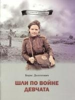
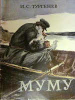
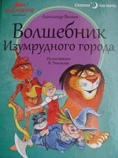
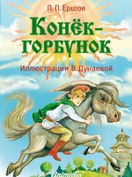

Женщина и война - понятия несовместимые. Но было время, когда на защиту Родины рядом с мужчинами встали их матери, дочери, сёстры. Большинство из них были связистами и медиками, однако многие воевали лётчиками, зенитчиками, снайперами и даже танкистами. Через чёрный смерч войны, опаливший миллионы жизней, сумели они пронести доброту и нежность, стойкость и верность, оптимизм и любовь. Девушкам и женщинам, достойно прошедшим дорогами Великой Отечественной войны, посвящена эта книга.

Это особенная книга, она состоит из двух частей: сначала ты познакомишься с трогательной историей Муму, а в конце книги тебя ждёт необычное приложение с увлекательными комментариями, пояснениями к тексту и картинками, их иллюстрирующими. Благодаря этому приложению ты сможешь в мельчайших подробностях вообразить быт той эпохи, понять смысл незнакомых слов и явлений, представить, как выглядели в то время дома, орудия труда, одежда, экипажи, ремесленники и многое другое, что поможет по-новому взглянуть на классическое произведение.

Повесть известного писателя Александра Волкова «Волшебник Изумрудного города» впервые вышла в свет в 1939 году, а это значит, что её читали наши бабушки и дедушки, мамы и папы. С тех пор повесть стала одной из самых любимых книг детства. И неудивительно! Сказочное путешествие Элли с верным пёсиком Тотошкой, невероятные приключения, удивительные знакомства и ещё много-много всего интересного не позволят читателям отложить книгу, пока они не перевернут её последнюю страницу.

В одном селе жил старик, у которого было три сына. Тем они и жили, что продавали пшеницу на рынке. Но однажды заметили крестьяне, что пшеница стала пропадать с поля. И решили старик и сыновья, что нужно изловить вора. И никак не удавалось это сделать, пока на поимку не вышел младший сын - Иван-дурак. Так начинаются невероятные приключения крестьянского сына и его верного друга Конька-Горбунка. Почти двести лет назад Пётр Павлович Ершов написал изящную и при этом полную народного юмора сказку про Конька-Горбунка. Издание украшают рисунки Владимира Милашевского.